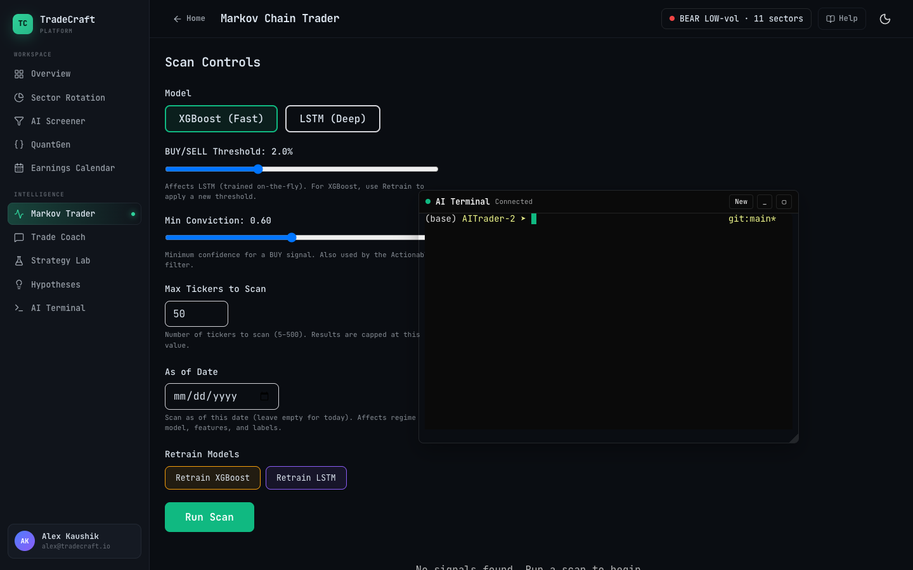
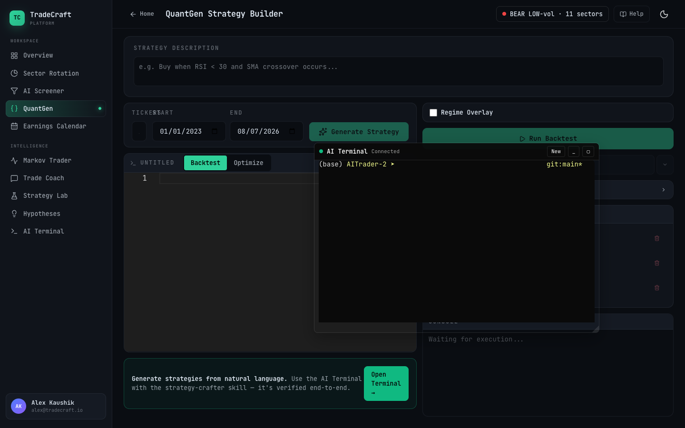
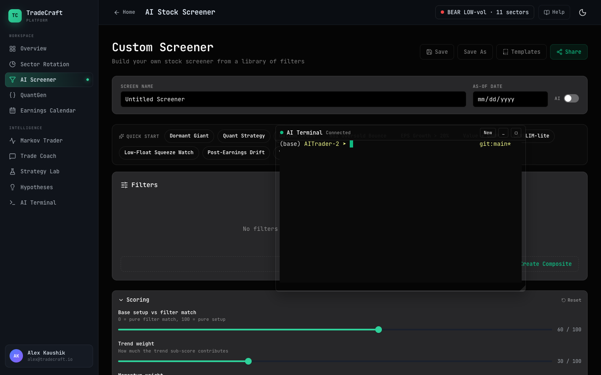
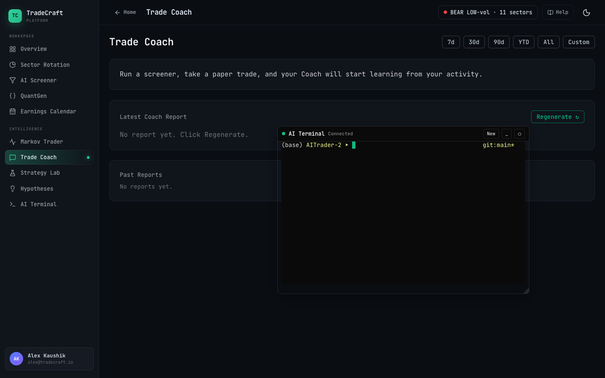
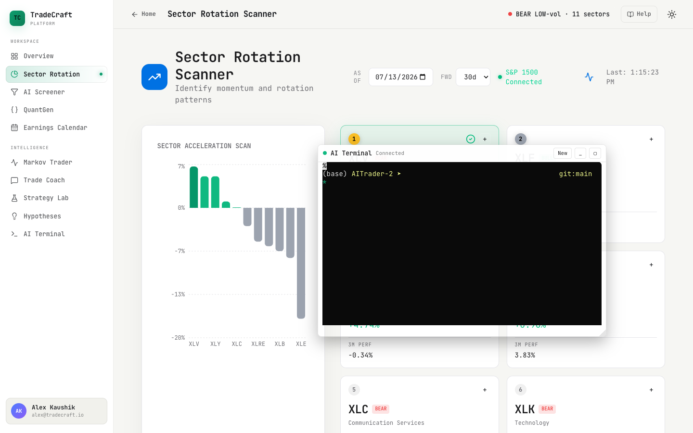

Markov Trader inside the terminal app shell.

QuantGen inside the terminal app shell.

AI Screener inside the terminal app shell.

Trade Coach inside the terminal app shell.

Sector Rotation inside the terminal app shell.